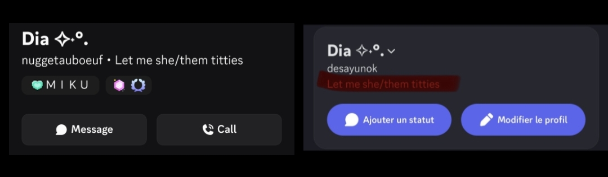
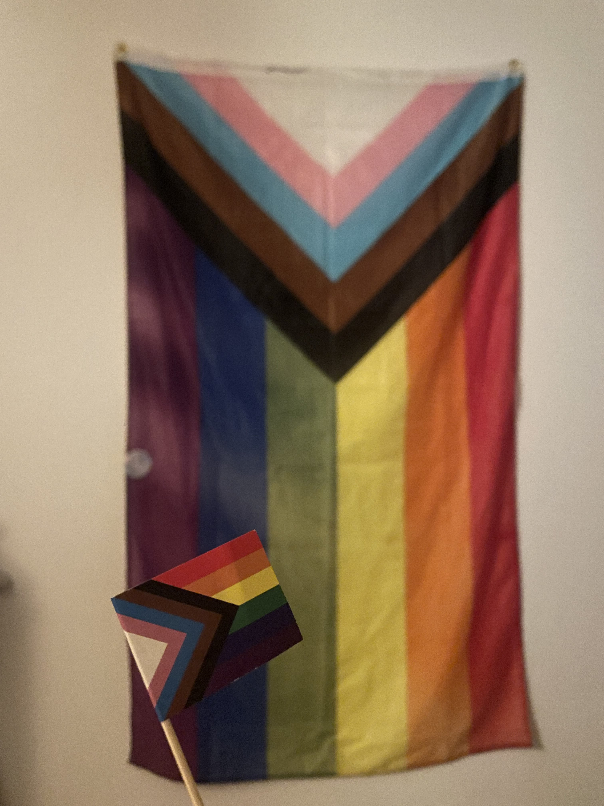
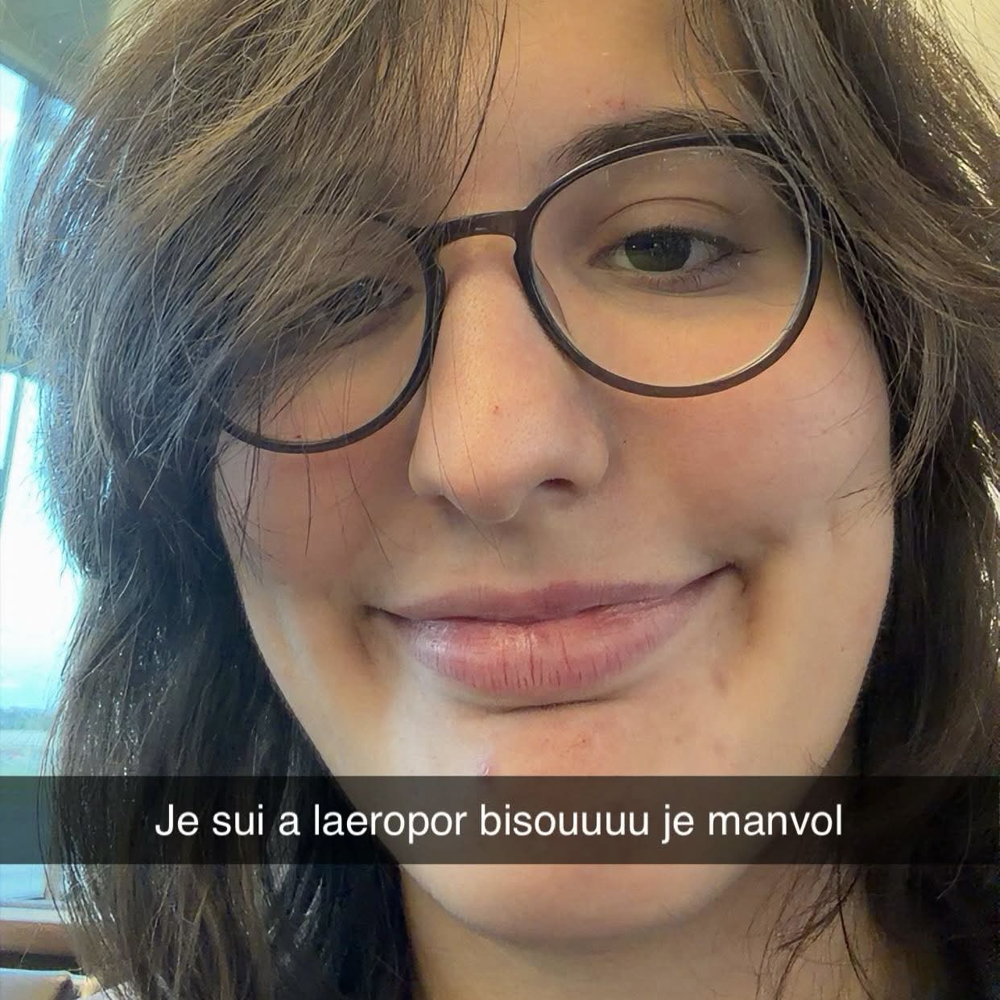

Première chose : Joyeux anniversaire !
Aujourd'hui, pour le monde entier, ça ne change rien car c'est une journée comme les autres... mais pour
toi,
c'est un grand jour. Parce que t'as enfin 20 piges !
Adieu, jeunesse ! Euh... Bonjour, vieillesse !
Mais trêves de cachotteries. Pour ton vingtième anniversaire, je t'ai préparé...
disons, une petite surprise.

Commençons par le commencement (on finira par la fin)
En 2020, j'ai rejoint un serveur sur Discord. Pas n'importe lequel. Ze infamous Otaku Gang.
Le plus grand rassemblement d'adolescents autodiagnostiqués, de fous du bus et de gens particulièrement sus sur l'Internet tout entier (à l'exception de Celui-dont-On-Ne-Cite-Pas-L'Url, Lord Jeuxvidéopointcom) (non ok j'avoue j'exagère).
Mais au milieu de ces gens (là l'exagère un peu moins promis), il y avait des personnes avec qui c'était possible de discuter autrement que par onomatopées et sans craindre pour sa santé mentale, et une certaine Bubulle en faisait partie. Une Suisse un peu random, réservée et déjà très chill en ces temps-là.
On est devenus potes, plus ou moins. On discutait de trucs un peu aléatoires, je sortais des phrases et des tirades que je ne pensais jamais regretter (et pourtant, quand je les revois, elles me cringent tellement...). En même temps qu'elle, j'avais plein d'autres potes sur Discord, et puis c'était le Covid, et dans la fièvre de cette épidémie, les serveurs étaient toujours plein à craquer de gens à rencontrer et avec lesquels discuter. C'était chouette.
Puis j'ai vécu un sale moment avec un gars que je croyais être mon ami, et j'ai abandonné et les serveurs Discord (qui étaient morts, de tte façon), et mes relations digitales.
Et puis le lycée s'est passé avec son lot de traumas, et j'ai raté ma première année d'études supérieures, et dans cette phase de transition, je me suis dit que ce serait sympa de parler avec des gens qui avaient fait partie intégrante de mon passé.
Et parmi ces gens il y avait... *roulements de tambour* Bubulle.
Mais permets-moi, pour parler de ça, on va un tout petit peu avancer dans le temps (pas de beaucoup, mais juste un peu).

Bubulle la giga droitarde (pov : une des premières photos qu'elle m'a envoyé)
J'ai vite appris que Bubulle (qui se faisait maintenant appeller Dia avec
des petites étoiles bien trop
stylées que je n'arrive toujours pas à reproduire) était une personne bien plus intéressante que je
ne
le pensais à l'époque de l'Otaku Gang.
A la fois, elle avait gardé ses hobbies de toujours (on ne commentera pas ici son nombre d'heures
indécents sur certains jeux clin d'oeil clin d'oeil), mais contrairement à la personne que j'avais
connue à l'époque, elle
avait l'air beaucoup plus heureuse, vivace et épanouie.
Elle était staff dans des festivals, écoutait de la musique d'ascenseur ("c'est de la bossa nova,
pas de la musique d'ascensceur !") et avait de belles attentes
pour elle-même et pour sa vie (je note en aparté qu'elle en a aujourd'hui encore toujours autant, et
toujours d'aussi belles).
Elle voyageait, avait un copain qui paraissait être une personne exceptionnelle, et elle avait
l'air... je sais pas, rayonnante ??
Je ne savais pas, à ce moment, que Bubulle sortait d'une grosse phase de dépression. Je ne savais
pas qu'elle avait
eu des galères vers la fin du collège, et que ça l'avait mise très mal. Je ne savais pas qu'elle
souffrait d'insomnies qui la pourchassaient chaque nuit depuis des années.
Je ne savais rien de son TCA, de ses problèmes familiaux, ni aucune autre de ces circonstances. Je
ne savais rien de cette Nadia-là.
Non, moi, tout ce que je savais au moment où on a commencé à parler, c'est qu'elle avait un drapeau gay sur son mur, qu'elle construisait une maison sakura et qu'elle était super cool. Qu'elle était très ouverte sur un tas de sujets, qu'elle pouvait parler de tout très librement... Et qu'elle était terminally online. Absolument, totalement, assurément terminally online.
Et puis le temps a passé. On a continué à échanger, parfois maladroitement, parfois en riant de la bonne époque de l'Otaku Gang. On s'échangeait des bribes, des images, des idées, on se questionnait sur l'Univers... Et j'ai aussi enfin appris ce que son pseudo voulait dire.
C'est simple. Ce n'était pas lié au portugais "dia", ni à la déclaration intentionnelle d'aliéner, ni à la pression diastolytique, un groupe de K-POP ou encore le Detroit Institute of Arts. Ce n'était pas non plus parce qu'elle adorait réaliser des dépistages de l'imprégnation alcoolique. Non, Dia, c'était simplement son surnom. Elle s'appelait _____dia (et je censure son nom entier, pour le cas où des inconnus se perdraient ici).
Copains comme cochons.
J'étais convaincu (et elle aussi, je crois) qu'on allait juste catch up vite fait, et qu'on
arrêterait de parler au bout de quelques jours.
Allez, soyons des filous, disons quelques semaines.
Nous n'avions pas tant de choses à nous raconter, non ?
D'accord, on est deux nerds avec une passion pour un genre musical d'un autre siècle, les animés et
le jeu Minecraft.
Mais il paraissait quand même surprenant que nous ne nous
fréquentions plus que quelques mois. Parce que c'est pas parce que tu ressembles à quelqu'un que
vous allez forcément vous entendre.
Pourtant, on a continué à parler pendant plusieurs semaines, puis ces semaines sont devenus des mois, qui sont devenus à leur tour des trimestres. Auxquels ont succédés les semestres, puis maintenant les années.
Et tant de temps a passé qu'elle attaque son arc université maintenant. Tu te rends compte, le temps a passé si vite que je ne me suis pas rendu compte qu'elle avait terminé le gymnase. Pourtant, je connais ses galères, je sais sa fierté quand elle a eu ses trois années, je me souviens d'à quel point le résultat de ses examens la stressaient limite plus que les examens eux-mêmes, parfois ("imagine j'ai moins de 4. omg. oskour. aled. édémoaaaaa aaaaah dsfhjdskqrtkrjjr"). Mais pourtant, non, j'ai du mal à m'en rendre compte.
C'est une page qui se tourne, pourrait-on dire. Mais j'ai la conviction que celle qui s'ouvre sera encore plus sensationnelle, encore plus riche et mènera à de nouvelles rencontres qui marqueront cette fille pour une vie toute entière.
On a commencé par le début, finissons par la fin.
J'écrivais le message pour ton anniversaire, et puis ce faisant, je repensais à tout ce que tu viens de lire. Et je me suis demandé :
- 1- qu'est-ce que je pourrais dire de plus, parce que mon message était déjà très complet ;
- et 2- comment je pourrais conclure ce long message.
C'est toujours l'étape la plus dure quand t'es avec quelqu'un : se dire au revoir. Dire bonjour,
c'est simple. "Bonjour Nadia, qu'est-ce que ça raconte de beau hahaha ?", ou "omg t'as vu
le pull de maghla mais wtf" . Je t'ai saluée. A partir de là, on peut ouvrir une discussion.
Si on discute (par exemple du prix du pull de maghla), là aussi, une fois lancé, j'y arrive à peu
près.
Mais quand vient le moment de s'arrêter, de dire "au revoir", enfin de se séparer et de
vaquer à nos vies, que ce soit quand on
s'est appelés ou quand je suis avec n'importe qui d'autre que j'apprécie, j'ai toujours trouvé ça
atrocement difficile.
Alors voilà, très chère, je vais essayer de te proposer une conclusion honorable et de bien te dire au revoir jusqu'à notre prochain échange : je te remercie pour ces deux dernières années et demie (et je te remercie par avance pour toutes celles à venir). Je nous en souhaite encore de très longues à discuter et rester en relation, et j'espère que cette missive te trouvera dans le meilleur des états, que tu trouves la vie au moins un peu belle et que les oiseaux chantent en choeur leur habituelle symphonie dehors.
Je t'envoie comme toujours toute la chance et tout le bonheur que je puisse t'envoyer (même si j'en ai aussi bien besoin ici, donc pardonne moi, mais j'en garde une partie !).
Je salue ta gentillesse, ta considération, ta patience, ton honnêteté et ton courage, tout comme j'admire ta détermination et ta bonté. Je prie pour que ton couple ne fasse que s'épanouir, et que la vie ne vous apporte que des sourires, des souvenirs et des petites (ou de grandes) victoires.
Pour ma part, comme toujours, compte sur moi. Je serai toujours là pour t'écouter, qu'importe ce sur quoi on échange. Cela me fera toujours autant plaisir qu'hier, et ça m'en fera toujours autant demain. Même si je traverse de mauvaises passes, je serai là.
Enfin, je te souhaite (je crois l'avoir dit très souvent, mais c'est important de le répéter) d'être heureuse. Je sais que c'est assez bateau en apparence, mais comme je crois te l'avoir déjà dit dans mon message d'anniversaire, on oublie souvent que le monde nous aime, et qu'il y aura toujours des gens qui seront là pour nous. D'où le fait que je te souhaite donc, et que je souhaite à toutes les personnes que tu portes dans ton coeur, d'être heureuses.
Je t'envoie plein d'amour, de Tourtel Twist et de câlins depuis ma petite chambre
étudiante.
La bise (parce que je sais pas terminer mes messages autrement que par "bien à toi" ou "la bise),
Ton ami Boris
P.S : Si la partie technique t'intéresse, le repository Github est disponible en cliquant ici
